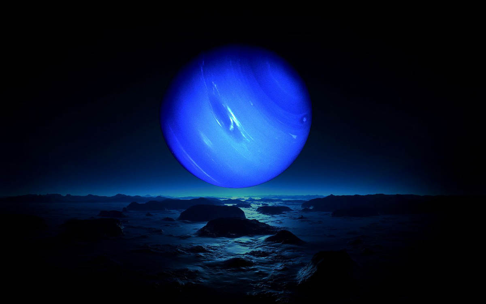

Dark, cold, and whipped by supersonic winds, ice giant Neptune is the eighth and most distant planet
in our solar system.
More than 30 times as far from the Sun as Earth, Neptune is the only planet in our solar system not
visible to the naked eye and the first predicted by mathematics before its discovery. In 2011
Neptune completed its first 165-year orbit since its discovery in 1846.
NASA's Voyager 2 is the only spacecraft to have visited Neptune up close. It flew past in 1989 on
its way out of the solar system.

Orbit and Rotation
One day on Neptune takes about 16 hours (the time it takes for Neptune to rotate or spin once). And
Neptune makes a complete orbit around the Sun (a year in Neptunian time) in about 165 Earth years
(60,190 Earth days).
Sometimes Neptune is even farther from the Sun than dwarf planet Pluto. Pluto's highly eccentric,
oval-shaped orbit brings it inside Neptune's orbit for a 20-year period every 248 Earth years. This
switch, in which Pluto is closer to the Sun than Neptune, happened most recently from 1979 to 1999.
Pluto can never crash into Neptune, though, because for every three laps Neptune takes around the
Sun, Pluto makes two. This repeating pattern prevents close approaches of the two bodies.
Neptune’s axis of rotation is tilted 28 degrees with respect to the plane of its orbit around the
Sun, which is similar to the axial tilts of Mars and Earth. This means that Neptune experiences
seasons just like we do on Earth; however, since its year is so long, each of the four seasons lasts
for over 40 years.
Moons
Neptune has 14 known moons. Neptune's largest moon Triton was discovered on October 10, 1846, by
William Lassell, just 17 days after Johann Gottfried Galle discovered the planet. Since Neptune was
named for the Roman god of the sea, its moons are named for various lesser sea gods and nymphs in
Greek mythology.
Triton is the only large moon in the solar system that circles its planet in a direction opposite to
the planet's rotation (a retrograde orbit), which suggests that it may once have been an independent
object that Neptune captured. Triton is extremely cold, with surface temperatures around minus 391
degrees Fahrenheit (minus 235 degrees Celsius). And yet, despite this deep freeze at Triton, Voyager
2 discovered geysers spewing icy material upward more than 5 miles (8 kilometers). Triton's thin
atmosphere, also discovered by Voyager, has been detected from Earth several times since, and is
growing warmer, but scientists do not yet know why.